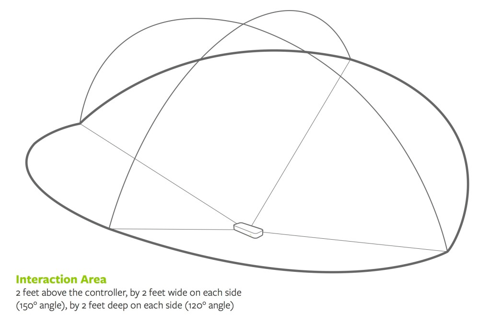

Problem Analysis
The Leap Motion sensor is a great tool and has many pre-built structures and interfaces, yet it can limit us because we do not have access to modify its base code and hardware to gain more flexibility. The Leap Motion sensor is designed to track fingers and hands, so we would need to somehow modify its software so it can identify the tip of a drumstick -- currently if we hold a stick in our hand, the Leap Motion sensor would see a hand with a finger sticking out.
However, after some preliminary testing, we have found that the Leap Motion sensor can track motion fast enough for our application, with a maximum frame rate of 115 Hz, well above the 20 Hz requirement. This should allow us to accurately measure position and acceleration of the drumsticks to determine strikes. We will need to ensure that the software used to analyze the raw data from the Leap sensor does not add an appreciable delay to make the VPS as realistic as possible.
Another issue is the limited sensing volume of the Leap sensor. We want the “air drums” to be placed at similar locations to their real drum counterparts to give users the realistic experience. This may be tricky, though it should be resolved with careful placement of the Leap sensor.

We must also tackle reproducing the feeling of striking a “real drum”. Many traditional drumming techniques rely on the rebounding of the stick off the drum head. This bounce allows for faster drumming. Several methods of replicating this effect include adding small spring near the palm and integrating a vibrating motor inside the stick. However, we do not wish to make the stick overly bulky or unwieldy for the user.